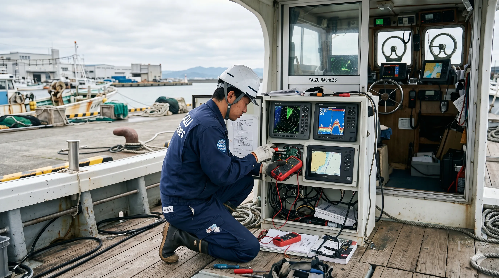

Safety & Reliability on the Sea
焼津市の船舶通信機器・航海計器・漁労機器の販売/メンテナンスのエフアイティ。
唯一無二の頼られる船舶技術会社であり続けます。
RECRUIT MOVIE 仕事と雰囲気

当社は、船舶に装備される無線通信機器および航海計器を専門領域とし、定期点検、故障・不具合時の修理、設置工事までを一貫してお引き受けしています。本社・拠点は静岡県焼津市、対応エリアは全国です。港・岸壁や船上などお客様の現場へ出張し、運航・操業に支障が生じないよう、迅速かつ丁寧に対応いたします。
これらの装備は安全な航行に直結します。不具合への判断や復旧手順の取りまとめは、担当者が責任を持って一連の流れとして対応することが重要です。長年にわたる技術と現場経験を踏まえ、お客様ならびに関係各位と必要な情報を共有しながら、ご依頼いただいた内容を確実に完了までお引き受けいたします。
業務の詳細は業務内容をご覧ください。
お取引では、現場の条件に即したご提案と、作業の区切りまで責任を持った対応を心がけています。急な不具合のご相談から定期点検まで、まずはお電話にてお知らせください。